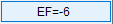
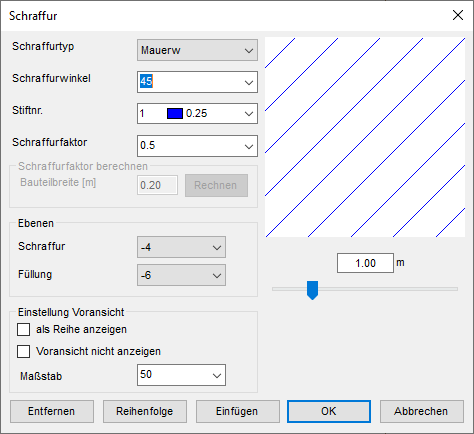
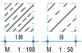
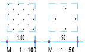
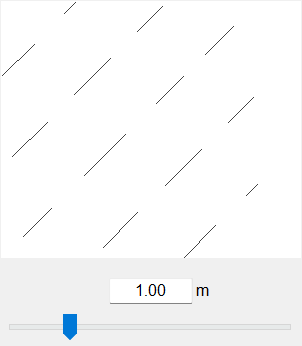
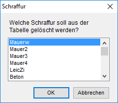
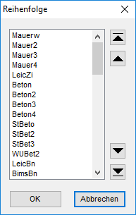
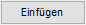

")
") →
→  ,
,  , ,
, ,
Sie können den Schraffurwinkel und -faktor angeben, Ebenen zuweisen, Schraffuren entfernen, importieren und sortieren.
Optionen im Dialog "Schraffur"
 |
Schraffurtyp
Wählen Sie den gewünschten Schraffurtyp aus der Dropdown-Liste aus. Die Schraffur wird im Vorschaufenster angezeigt.
Schraffurwinkel
Geben Sie den Drehwinkel direkt ein oder wählen Sie einen Winkel aus der Dropdown-Liste.
Stiftnr.
Klicken Sie die Stiftauswahl an, um die Dropdown-Liste zu öffnen, und wählen den gewünschten Stift für die Schraffur aus.
Schraffurfaktor
Mit dem Schraffurfaktor stellen Sie die „Größe“ der Schraffur ein. Hierbei ist grundsätzlich zwischen den normalen Linienschraffuren und den so genannten Symbolschraffuren zu unterscheiden.
Linienschraffuren - Diese Schraffuren werden mit unterschiedlichen Strichtypen (Durchg, Gestr1, Gestr2 usw.) gezeichnet. Bei diesen Schraffuren wird nur der parallele Abstand durch den Faktor verändert. Bei Schraffuren, die mit Teillinien gezeichnet werden, wird auch der Abstand der Linienstücke in Längsrichtung skaliert. Symbolschraffuren - Bei den Symbolschraffuren wird mit dem Schraffurfaktor die Gesamtgröße des Symbols verändert. Zum Beispiel kann eine 10 cm dicke Wärmedämmung nur mit einem einzigen Faktor richtig dargestellt werden. |
 |
 |
gleiche Strichtypen |
jeder Punkt = 1 Linie |
Voransicht
Hier wird die gewählte Schraffur mit den Parametern Schraffurwinkel, Stiftnr. und Schraffurfaktor angezeigt. Um abschätzen zu können, ob der Abstand der Linien (Schraffurfaktor) richtig gewählt ist, können Sie für die Breite (= Höhe) des Fensters ein Maß angeben, welches dem Bauteil entspricht. Dieses Maß kann auch mit dem Schieberegler, durch Verziehen mit gedrückter linker Maustaste, eingestellt werden. Mit dem Schieberegler können nur auf 10 cm genaue Maße eingestellt werden. Das maximal einzustellende Maß ist 5 m.
 |
Wenn die Option als Reihe anzeigen aktiviert ist, und eine Schraffur nicht dargestellt werden kann, wird "Keine Vorschau" angezeigt.
Schraffurfaktor berechnen
Die Eingabe und die Schaltfläche für die Berechnung werden nur dann aktiv, wenn Sie im Dialogbereich Einstellung Voransicht bei als Reihe anzeigen einen Haken in die Checkbox setzen.
Bauteilbreite [m]
Geben Sie die Breite bzw. die Dicke des Symbols an. Zum Beispiel die Dicke der Dämmschicht. Der Wert wird mit der Tastatur eingegeben. Die Übernahme der Messwerte ist hier nicht möglich.
Wenn Sie auf diese Schaltfläche klicken, wird der Schraffurfaktor berechnet. Darin geht neben der Bauteilbreite auch der Maßstab ein.
Wenn Sie den Faktor selbst berechnen möchten, benutzen Sie die folgende Formel:
f = d [m] x 100 / M |
|---|
Ebenen
Standardmäßig werden Schraffuren in die Ebene -4 und Füllungen in die Ebene -6 gelegt. Dadurch liegen Schraffuren auf einer höheren Ebene und werden über die Füllungen gezeichnet. Wenn die Ebene der Füllungen über der Ebene der Schraffuren liegt, werden Schraffuren von Füllungen überdeckt. Ist das der Fall, wird dieses Symbol  eingeblendet.
eingeblendet.
Wenn Sie hier die Werte ändern, werden neue Schraffuren und Füllungen mit diesen Parametern erstellt. Mit [Schraf | ändere] oder der sowie-Funktion wird die Ebene der angeklickten Schraffur oder Füllung übernommen. Die Ebene wird dann beim Erstellen neuer Schraffuren bzw. Füllungen verwendet.
Insgesamt stehen Ihnen 32 Ebenen, von -15 bis 16, zur Verfügung, wobei -15 der untersten und 16 der obersten Ebene entspricht.
Siehe auch: Elemente in Ebenen sortieren
Einstellung Voransicht
Einige Schraffurarten können sowohl als flächige Schraffur als auch an einer Reihe angeordnet werden. Um die unterschiedliche Darstellungsform zu sehen, setzen Sie einen Haken in die Checkbox. Wenn die Schraffurart nicht dazu geeignet ist, wird stattdessen „Keine Vorschau“ angezeigt.
Der Haken schaltet die Berechnung des Schraffurfaktors frei.
Voransicht nicht anzeigen
Voreingestellt ist die Darstellung der Voransicht. Wenn Sie diese nicht anzeigen möchten, setzen Sie hier einen Haken in die Checkbox.
Maßstab
Sie können den Maßstab, in dem die Schraffur gezeichnet werden soll, entweder direkt eingeben oder aus der Liste auswählen. Dieser Wert wird bei der Berechnung des Schraffurfaktors berücksichtigt.
Öffnet den Dialog Schraffur.
Hier wählen Sie die zu löschende Schraffurart aus. Gegebenenfalls scrollen Sie nach unten, um die gesuchte Schraffurart zu finden. Markieren Sie diese und betätigen mit OK. Nach einer Bestätigungsabfrage wird die Schraffur aus der Liste entfernt. Durch Abbrechen gelangen Sie wieder in den Eingabedialog zurück.
 |
Öffnet den Dialog Reihenfolge.
Sie können die Schraffurtypen in der Schraffurauswahl (Funktionsbereich) sortieren. Markieren Sie die Schraffurart durch Anklicken. Mit Hilfe der Pfeile verschieben Sie den Eintrag ganz nach oben, eine Zeile höher, eine Zeile tiefer oder ganz nach unten. Mehrere Schraffurarten können mit Strg + linke Maustaste markiert werden. Die markierten Schraffuren werden dann, je nach gedrücktem Navigationspfeil nach oben oder unten verschoben. Mit gedrückter Umschalttaste werden alle Zeilen zwischen dem ersten und letzten angeklickten Schraffurnamen markiert. Um die Sortierung zu bestätigen, klicken Sie auf OK. Soll die Sortierung nicht ausgeführt werden, klicken Sie Abbrechen.
 |

Öffnet den Dialog Öffnen. Siehe: Schraffuren importieren

Alle Einstellungen für die Schraffur werden übernommen.

Vorgenommene Änderungen an den Einstellungen werden verworfen.
Die vorher eingestellten Schraffurparameter werden wieder aktiv.
Zugehörige Referenzen: